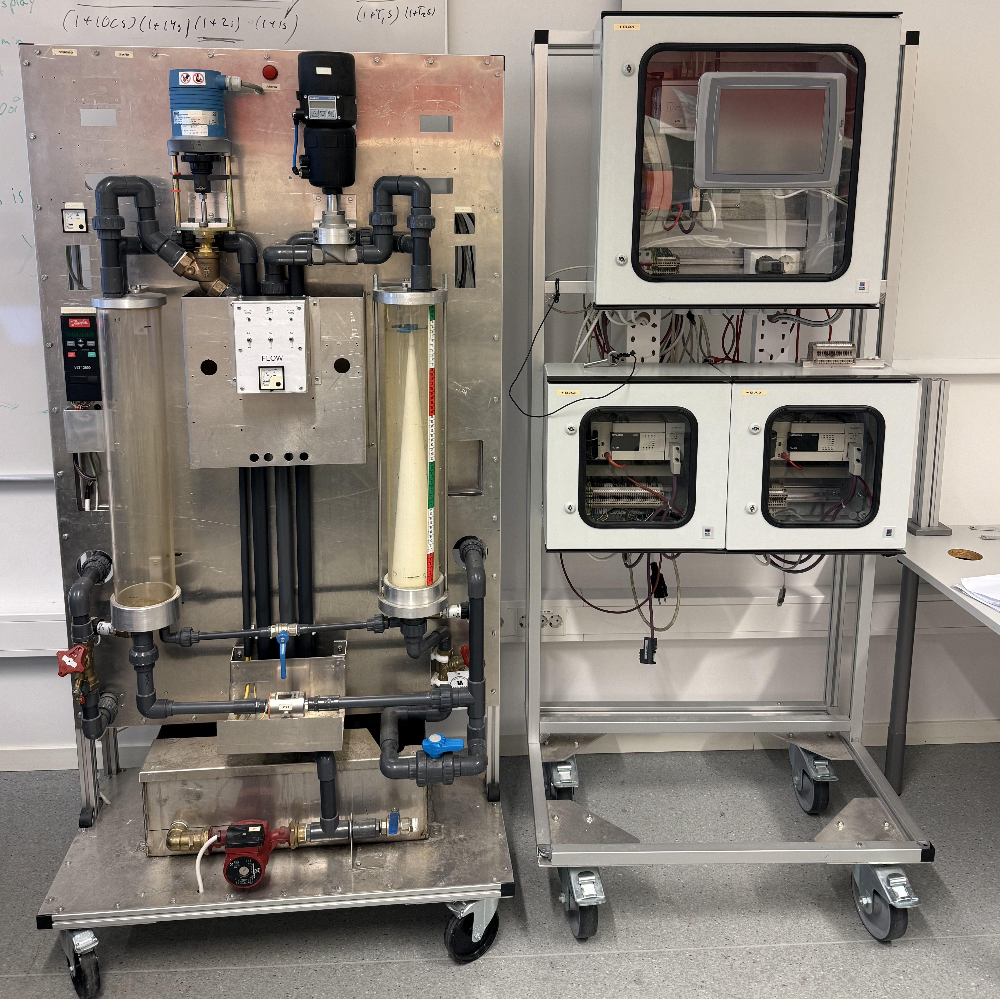

PLS-regulering av vanntank
Oversikt
Semesteroppgave i automatiseringsteknikk (IELET2104) ved NTNU. Prosjektet gikk ut på å utvikle et komplett automatisert reguleringssystem for nivåkontroll av en tankprosess. Systemet ble implementert på en rigg bestående av én master-PLS og to slave-PLSer, koblet sammen via PROFIBUS. Riggen kommuniserte med en separat tankrigg utstyrt med frekvensomformer, elektrisk reguleringsventil, trykkmåler, strømningsmåler og magnetventiler.
Målet var å holde vannivået stabilt på et gitt settpunkt til tross for forstyrrelser, med rask respons ved referanseendringer. Systemet støtter to reguleringsmoduser, én med frekvensomformer som pådragsorgan og én med reguleringsventil, og kan bytte sømløst mellom disse.
Semester project in automation engineering (IELET2104) at NTNU. The project involved developing a complete automated control system for level control of a tank process. The system was implemented on a rig consisting of one master PLC and two slave PLCs, interconnected via PROFIBUS. The rig communicated with a separate tank rig equipped with a variable frequency drive, an electric control valve, a pressure sensor, a flow meter, and solenoid valves.
The objective was to maintain a stable water level at a given setpoint despite disturbances, with fast response to reference changes. The system supports two control modes, one using the frequency converter as the actuator and one using the control valve, and can switch seamlessly between them.
Kommunikasjon og arkitektur
- Master-PLS koblet til to slave-PLSer via PROFIBUS, konfigurert med GX Configurator DP. Hver slave sender og mottar opptil 16 dataregistre.
- Parameterindeksering implementert for å overføre mer enn 16 parametere fra master til slave, en felles Parameter- og ParameterID-verdi sendes i samme register, noe som støtter opptil 60 parameterverdier totalt.
- Alle parameterverdier lagres i slave 1, som har batterimatede dataregistre. Dette sikrer at parametere bevares ved strømbrudd og automatisk initialiseres tilbake til master ved oppstart.
- Kommunikasjon med tankrigg via AD/DA-moduler og spenningssignaler (0–10 V) over 12-bits signalomfang.
- Master koblet til operatørpanel (iX Developer) og SCADA (InTouch via KEPServerEX) gjennom Ethernet-modul og intern ruter. Begge grensesnitt er fullt synkronisert, inkludert alarmkvittering.
- Master PLC connected to two slave PLCs via PROFIBUS, configured using GX Configurator DP. Each slave sends and receives up to 16 data registers.
- Parameter indexing implemented to transfer more than 16 parameters from master to slave, a shared Parameter and ParameterID value is sent in the same register, supporting up to 60 parameter values in total.
- All parameter values are stored in Slave 1, which has battery-backed data registers. This ensures parameters are preserved during power failures and automatically re-initialised to the master on startup.
- Communication with the tank rig via AD/DA modules and voltage signals (0–10 V) over a 12-bit signal range.
- Master connected to operator panel (iX Developer) and SCADA (InTouch via KEPServerEX) through an Ethernet module and internal router. Both interfaces are fully synchronised, including alarm acknowledgement.
Reguleringsstrategi
- PI-regulator for frekvensomformeren: systemet responderer raskt med liten oversvinningsfare, slik at D-leddet ikke er nødvendig. Parametere bestemt ved frekvensanalyse og sprangrespons: Kp = 3.0, Ti = 45 s.
- PID-regulator for ventilen: D-leddet er kritisk for å forhindre oversving, grunnet ventilens fysiske treghet, hysterese og dødsone. Parametere bestemt eksperimentelt: Kp = 3.5, Ti = 60 s, Td = 3 s.
- Lead-lag-element som foroverkobling fra forstyrrelsessignalet (utstrømning) for frekvensomformeren, for raskere kompensasjon av kjente forstyrrelser.
- Andreordens lavpassfilter på referansesignalet for jevn S-kurveovergang uten harde akselerasjoner, innstilt med kritisk demping og naturlig frekvens 1.5 rad/s.
- Førsteordens lavpassfiltre på målte signaler (tidskonstant 1.5 s) for å redusere støy fra turbulent innstrømning uten å innføre vesentlig tidsforsinkelse.
- Midlingsfilter over 15 målinger på trykksignalet for stabile og lesbare verdier i HMI/SCADA.
- Ratebegrensning på begge pådrageorganer for å begrense fysisk slitasje og hindre overjusteringer. Tastetid satt til 100 ms fast scanningintervall.
- Anti-windup (tracking) implementert i integralleddet for å forhindre oppbygging av integralfeil ved metning.
- PI controller for the frequency converter the system responds quickly with little risk of overshoot, making the D-term unnecessary. Parameters determined via frequency analysis and step response: Kp = 3.0, Ti = 45 s.
- PID controller for the valve: the D-term is critical for preventing overshoot, due to the valve's physical lag, hysteresis, and dead zone. Parameters determined experimentally: Kp = 3.5, Ti = 60 s, Td = 3 s.
- Lead-lag feed-forward element from the disturbance signal (outflow) for the frequency converter, enabling faster compensation of known disturbances.
- Second-order low-pass filter on the reference signal for smooth S-curve transitions without hard accelerations, tuned with critical damping and natural frequency 1.5 rad/s.
- First-order low-pass filters on measured signals (time constant 1.5 s) to reduce noise from turbulent inflow without introducing significant delay.
- Moving average filter over 15 samples on the pressure signal for stable and readable values in HMI/SCADA.
- Rate limiting on both actuators to reduce physical wear and prevent overshoot. Sample time set to a fixed 100 ms scan interval.
- Anti-windup (tracking) implemented in the integral term to prevent integrator wind-up during saturation.
Sekvenslogikk og sikkerhet
- Sekvensstyrt oppstart: systemet initialiserer alltid i steg 0 etter strømbrudd. Tanken tømmes til under 60 % (steg 1), deretter etableres laminær innstrømning ved 40 Hz (steg 2), før regulering aktiveres (steg 3).
- For å sikre laminær flyt i starten av reguleringsfasen sendes en midlertidig fastverdi til pådragsorganet i de første 14 sekundene av steg 3, slik at regulatoren ikke sender for lavt pådrag før systemet er stabilt.
- Feilhåndtering via steg 4 og 5 ved kritiske alarmer. Tanknivået bringes tilbake til 50 % før systemet returnerer til initialisering.
- Anti-lekking-protokoll i steg 0: magnetventilene åpnes periodisk i 0.2 sekunder hvert 7. sekund dersom lekkasje oppdages, for å forsøke å stoppe utstrømning.
- To alarmnivåer: alarm (Hi >80 %, Lo <20 %, avvik >10 % i >60 s) og kritisk alarm (HiHi >90 %, LoLo <10 %). Alle alarmer krever manuell kvittering fra HMI eller SCADA.
- Sequence-controlled startup: the system always initialises in step 0 after a power failure. The tank is drained below 60% (step 1), laminar inflow is then established at 40 Hz (step 2), before control is activated (step 3).
- To ensure laminar flow at the start of the control phase, a temporary fixed value is sent to the actuator for the first 14 seconds of step 3, preventing the controller from outputting too low a setpoint before the system is stable.
- Fault handling via steps 4 and 5 on critical alarms. The tank level is brought back to 50% before the system returns to initialisation.
- Anti-leak protocol in step 0: solenoid valves are opened periodically for 0.2 seconds every 7 seconds if leakage is detected, in an attempt to stop outflow.
- Two alarm levels: alarm (Hi >80%, Lo <20%, deviation >10% for >60 s) and critical alarm (HiHi >90%, LoLo <10%). All alarms require manual acknowledgement from HMI or SCADA.
Brukergrensesnitt
- SCADA-system utviklet i InTouch med rollebasert tilgangskontroll (3 operatørnivåer). Operatør 3 har full tilgang til alle parametere og regulatorinnstillinger, mens operatør 1 kun kan lese prosessdata og justere referansen.
- Lokalt operatørpanel utviklet i iX Developer (TA100) med tre sider: Hjem, Trend og Alarm. Utformet for enkel og oversiktlig kontroll direkte på riggen uten behov for PC.
- Begge grensesnitt er utviklet etter High Performance HMI-prinsipper: grå bakgrunn, begrenset fargebruk, ingen unødvendige animasjoner, analog visualisering av kritiske verdier.
- Sanntids- og historiske trender, alarmlogg med CSV-eksport, og synkronisert alarmkvittering mellom HMI og SCADA.
- SCADA system developed in InTouch with role-based access control (3 operator levels). Operator 3 has full access to all parameters and controller settings, while Operator 1 can only read process data and adjust the setpoint.
- Local operator panel developed in iX Developer (TA100) with three screens: Home, Trend, and Alarm. Designed for simple and clear control directly on the rig without needing a PC.
- Both interfaces were developed following High Performance HMI principles: grey background, limited use of colour, no unnecessary animations, and analogue visualisation of critical values.
- Real-time and historical trends, alarm log with CSV export, and synchronised alarm acknowledgement between HMI and SCADA.
Hva ble lært
- Praktisk erfaring med PLS-programmering i GX Works 2, Ladderdiagram og C-kode, og oppbygging av modulære funksjonsblokker for regulering, filtrering og logikk.
- Sammenhengen mellom teoretisk PID-design (frekvensanalyse, sprangrespons, modellering) og praktisk implementasjon og tuning på ekte hardware.
- Diskretisering av kontinuerlige regulator- og filterstrukturer ved bakoverdifferanse og bilineær transformasjon, og hvordan valg av metode påvirker stabilitet og dynamikk.
- Kompleksiteten ved å regulere et system med fysiske begrensninger som ventilens hysterese, treghet og dødsone krevde annen tilnærming enn frekvensomformeren.
- Viktigheten av god systemarkitektur: batterilagret minne i slave 1 som eneste pålitelige lagringsplass, og parameterindeksering for å omgå begrensninger i kommunikasjonsprotokollen.
- Design og implementasjon av HMI/SCADA etter High Performance-prinsipper, med rollebasert tilgangskontroll og synkronisering på tvers av grensesnitt.
- Practical experience with PLC programming in GX Works 2, Ladder diagrams and C code, and building modular function blocks for control, filtering, and logic.
- The relationship between theoretical PID design (frequency analysis, step response, modelling) and practical implementation and tuning on real hardware.
- Discretisation of continuous controller and filter structures using backward difference and bilinear transformation, and how the choice of method affects stability and dynamics.
- The complexity of controlling a system with physical limitations like the valve's hysteresis, lag, and dead zone required a different approach than the frequency converter.
- The importance of good system architecture: battery-backed memory in Slave 1 as the only reliable storage, and parameter indexing to work around protocol limitations.
- Design and implementation of HMI/SCADA following High Performance principles, with role-based access control and synchronisation across interfaces.